Who am I?
On this page you will find out many of the things that I enjoy. The content on this page will likely change as I discover and learn new things.
Hobbies
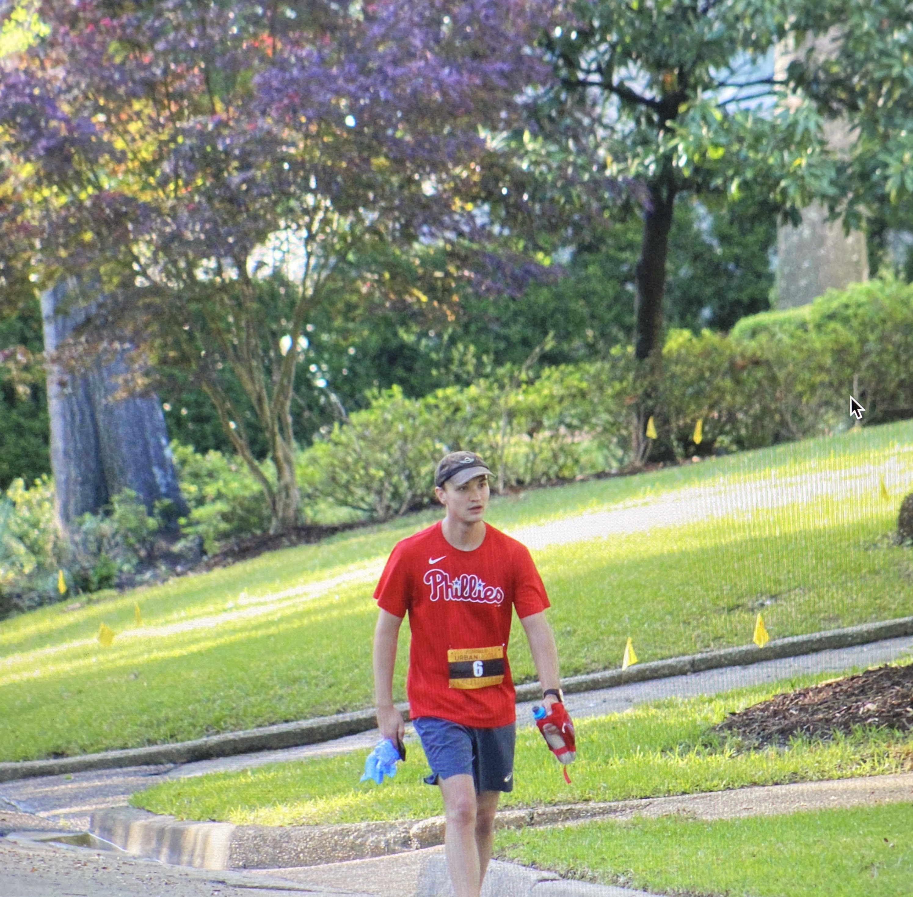
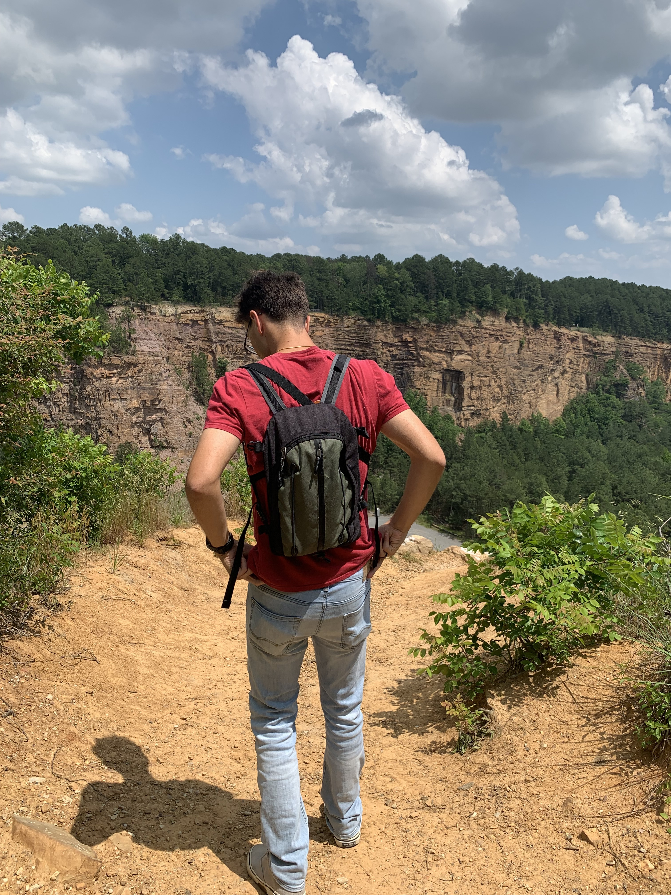
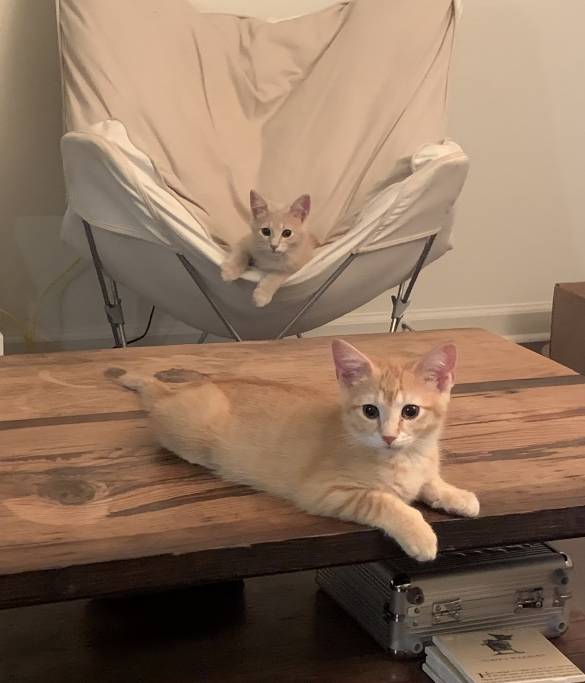
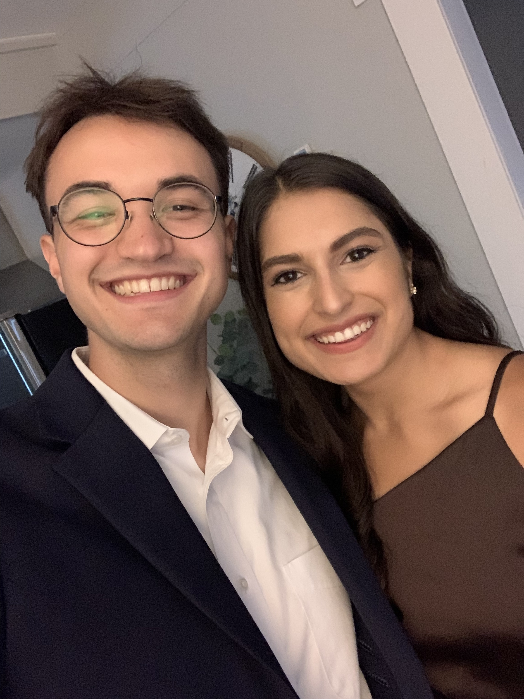
Music
The albums and songs listed below each have a YouTube link embedded within, if you would like to give them a listen! Also, if you hover your cursor over each image you will get the title and artist for each album/song.
Albums


Songs
Books
Leisure

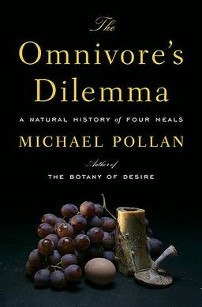

Entertainment
Movies
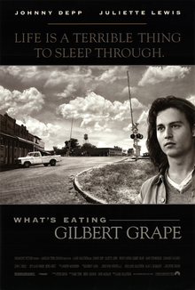


TV Shows

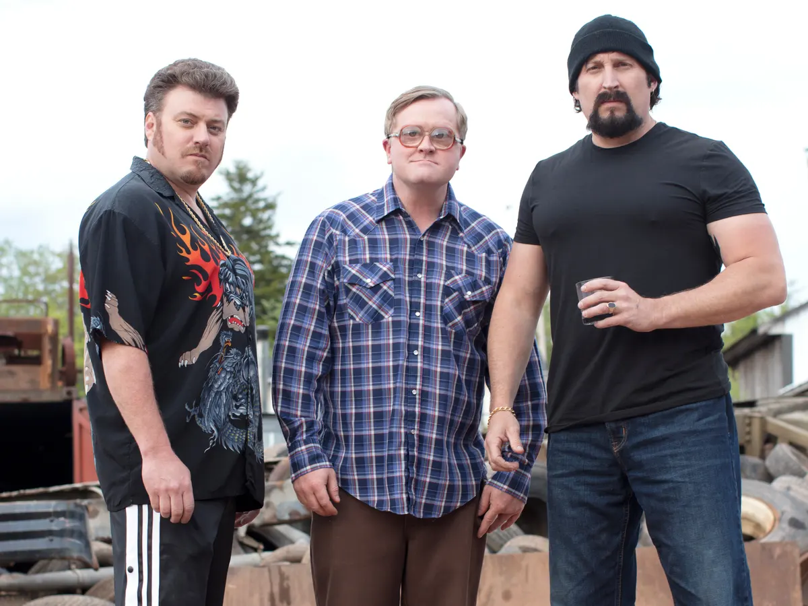
Birds
The photos below are not mine (although I have seen all these species in-person). They are all taken by the National Audubon Society!
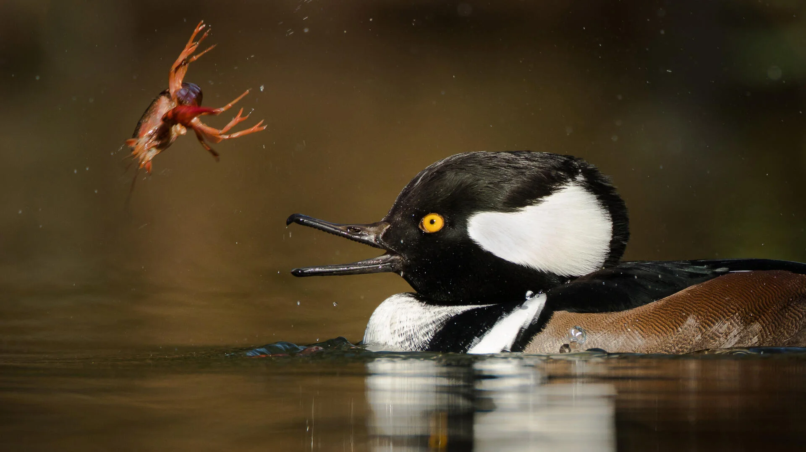
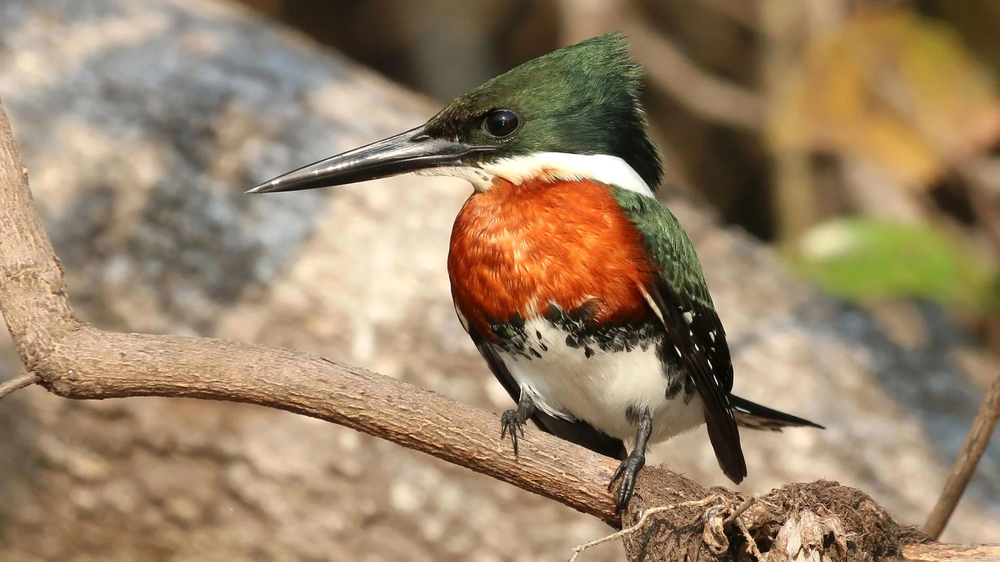
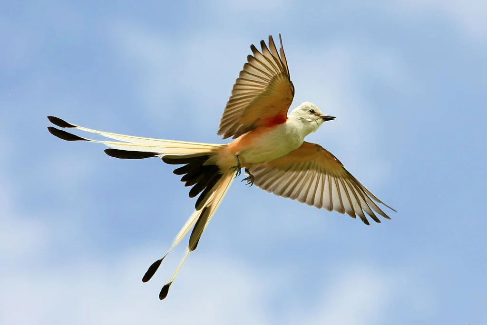
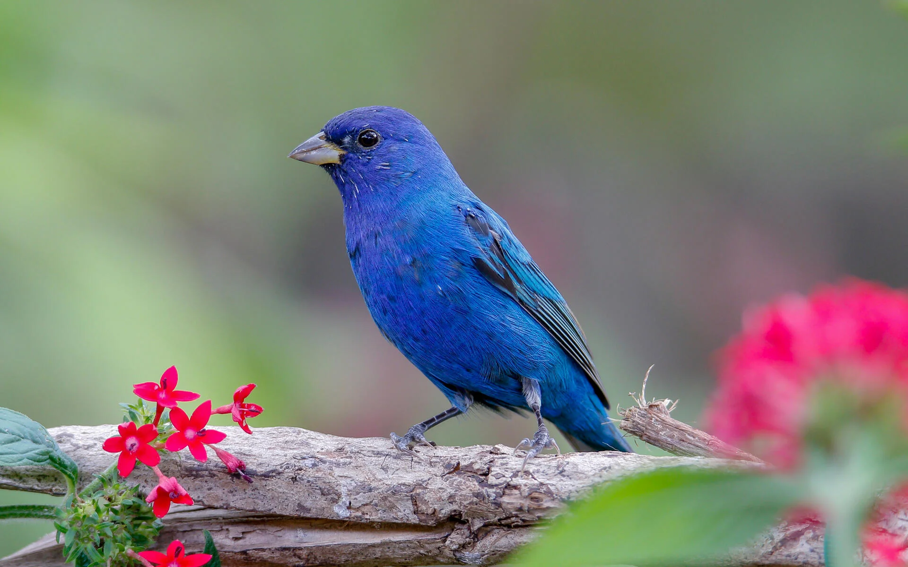
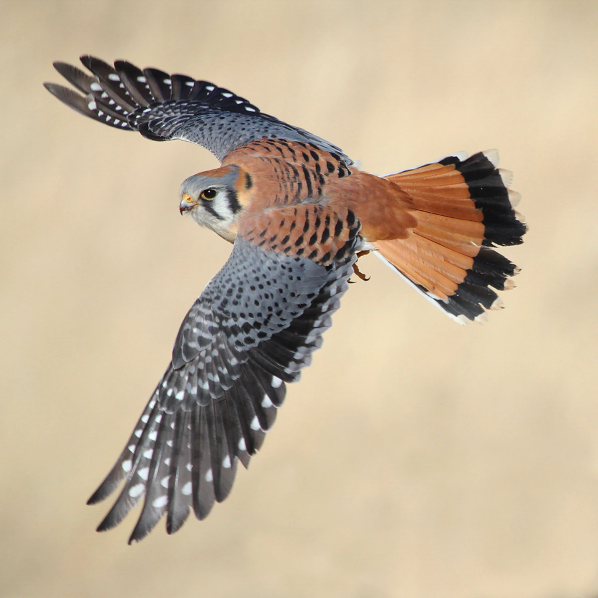

Sports Teams